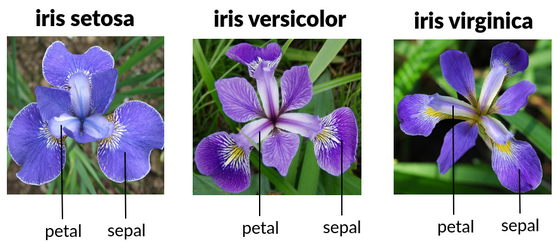
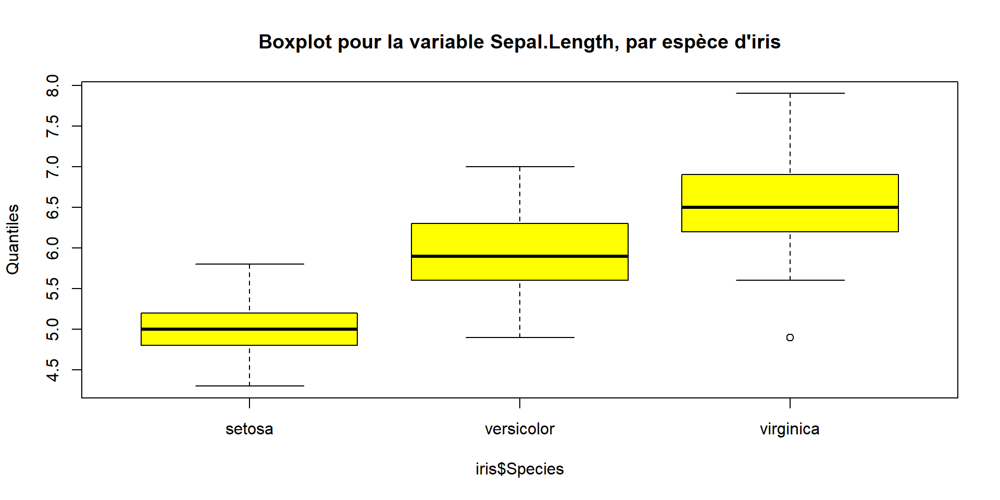
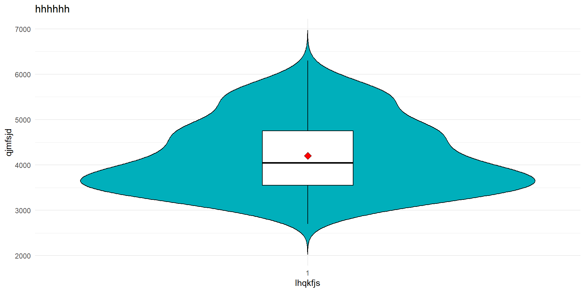
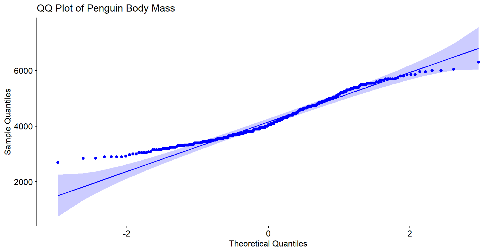
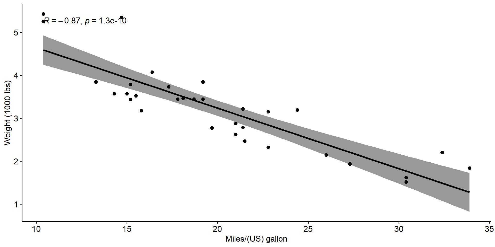
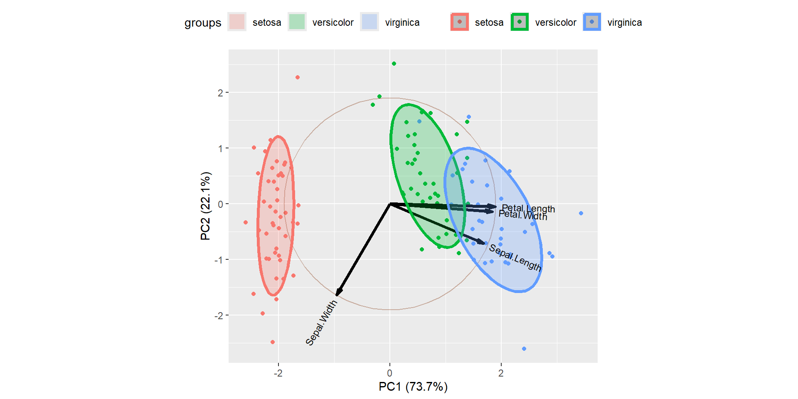
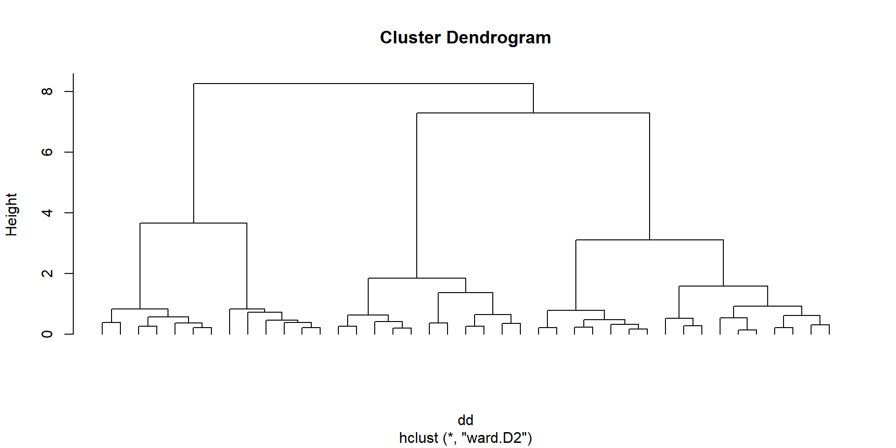

Statistics and data analysis
 A brief intro to R and RStudio
A brief intro to R and RStudio
 A brief intro to R and RStudio
A brief intro to R and RStudio
- Free open source language
- Built to do statistics
- Updated by the mathematician from all over the world
- Amazing graphics !
- Widely used in biology, agronomy, economy, …
R and RStudio
Learn it, love it, use it !
Installation of R and RStudio
To Do !
Install R and RStudio for next class !
Basics of R and RStudio
A very great video to learn the basics of R
Good habits
- create a project on RStudio
- create ALWAYS 4 folders :
data_rawdataimgdoc
- Use the
helpfunction ! … and alsochat GPT…
WARNING ! It often writes code wayyyy too complicated ! - What you see in your OneDrive folder :

Launch RStudio
Always launch your RStudio project with

Using RStudio

Import DATA into RStudio
- Data used for this class :
Data.Lecture.xlsx
Important
You can download it by clicking on Data.Lecture.xlsx !

- Import data from an excel file
- Possible to import data from many more file formats …
Let’s get started
NOW “doing statistics” can get started !
 Exploring data
Exploring data
Def.
- A variable \(X\) is any characteristic observed in a study.
- The data values that we observe for a variable are called observations
Qualitative / Categorical Variable
A variable is called qualitative if each observation belongs to a set of distinct categories
Nominal : Categories are disconnected. (Examples : Hair Color, Animal Species, …)
Ordinal : Categories are ranked (Example : Level of Education, …)
Quantitative / Numerical Variable
A variable is called quantitative if observations on it take numerical values that represent different magnitudes of the variable
Discrete : the variable assume values in a countable set (Examples : Number of episode in a series, Grades, …)
Continuous : the variable assume values in a continuous set (Examples : Time, most physical measurements, …)
In a dataset (sample of a population) we have measurements of variables for different individuals.
- Unit / individual : A member of a population
- Population : The collection of all individuals / units that we want to know more about
- Sample : The subset of the population we observe
- Modality : The distinct values or categories that the variable can take
Before making advanced statistics with our data it is essential to examine all our variables !
Why ? To “listen” to the data :
- to catch mistakes
- to see patterns in the data
- to find violations of statistical assumptions
- to generate hypotheses
- … and because if you don’t, you will have trouble later !
- We will recall notions of descriptive Statistics with R
- This has been written using this webpage (INRAE)
We will use the dataset iris.
Sepal.Length Sepal.Width Petal.Length Petal.Width Species
1 5.1 3.5 1.4 0.2 setosa
2 4.9 3.0 1.4 0.2 setosa
3 4.7 3.2 1.3 0.2 setosa
4 4.6 3.1 1.5 0.2 setosa
5 5.0 3.6 1.4 0.2 setosa
6 5.4 3.9 1.7 0.4 setosa[1] 150 5There are 5 variables and 150 individuals.
4 quantitative variables :
Sepal.LengthSepal.Width
Petal.Length
Petal.Width
1 qualitative variable :
Species

 Univariate statistics
Univariate statistics
To have a global view : summary
Sepal.Length Sepal.Width Petal.Length Petal.Width
Min. :4.300 Min. :2.000 Min. :1.000 Min. :0.100
1st Qu.:5.100 1st Qu.:2.800 1st Qu.:1.600 1st Qu.:0.300
Median :5.800 Median :3.000 Median :4.350 Median :1.300
Mean :5.843 Mean :3.057 Mean :3.758 Mean :1.199
3rd Qu.:6.400 3rd Qu.:3.300 3rd Qu.:5.100 3rd Qu.:1.800
Max. :7.900 Max. :4.400 Max. :6.900 Max. :2.500
Species
setosa :50
versicolor:50
virginica :50
The command summary gives us :
- for the quantitative variables :
- the minimum
- the 1st quartile
- the median
- the mean
- the 3rd quartile
- the maximum
- for the qualitative variables :
- the number of observations in each category
Using describe for data summaries :
iris
5 Variables 150 Observations
--------------------------------------------------------------------------------
Sepal.Length
n missing distinct Info Mean pMedian Gmd .05
150 0 35 0.998 5.843 5.8 0.9462 4.600
.10 .25 .50 .75 .90 .95
4.800 5.100 5.800 6.400 6.900 7.255
lowest : 4.3 4.4 4.5 4.6 4.7, highest: 7.3 7.4 7.6 7.7 7.9
--------------------------------------------------------------------------------
Sepal.Width
n missing distinct Info Mean pMedian Gmd .05
150 0 23 0.992 3.057 3.05 0.4872 2.345
.10 .25 .50 .75 .90 .95
2.500 2.800 3.000 3.300 3.610 3.800
lowest : 2 2.2 2.3 2.4 2.5, highest: 3.9 4 4.1 4.2 4.4
--------------------------------------------------------------------------------
Petal.Length
n missing distinct Info Mean pMedian Gmd .05
150 0 43 0.998 3.758 3.65 1.979 1.30
.10 .25 .50 .75 .90 .95
1.40 1.60 4.35 5.10 5.80 6.10
lowest : 1 1.1 1.2 1.3 1.4, highest: 6.3 6.4 6.6 6.7 6.9
--------------------------------------------------------------------------------
Petal.Width
n missing distinct Info Mean pMedian Gmd .05
150 0 22 0.99 1.199 1.2 0.8676 0.2
.10 .25 .50 .75 .90 .95
0.2 0.3 1.3 1.8 2.2 2.3
lowest : 0.1 0.2 0.3 0.4 0.5, highest: 2.1 2.2 2.3 2.4 2.5
--------------------------------------------------------------------------------
Species
n missing distinct
150 0 3
Value setosa versicolor virginica
Frequency 50 50 50
Proportion 0.333 0.333 0.333
--------------------------------------------------------------------------------- The
Hmiscpackage provides thedescribefunction to quickly summarize a dataset.
- For quantitative variables, it reports :
- number of observations
- missing values
- mean
- quantiles (5%, 10%, 25%, 50%, 75%, 90%, 95%)
- 5 lowest and 5 highest values
- For qualitative variables, it reports :
- number of observations
- missing values
- number of modalities
- frequency and proportion of each modality
Quantitative variables
For each quantitative variable, it is also possible to obtain the following statistics separately.
- the sum of all the modalities in
Sepal.Length
- the mean of the variable
Sepal.Length
- the variance of the variable
Sepal.Length
- the standard deviation of the variable
Sepal.Length
- the minimum of the variable
Sepal.Length
- the maximum of the variable
Sepal.Length
- the median of the variable
Sepal.Length
- the quantiles of the variable
Sepal.Length
- the number of modalities in the variable
Sepal.Length
Chart representations
- A first representation is to use a boxplot
- Graphical way to summarize a quantitative variable
- Show its distribution, central tendency, and spread, including outliers.
Components of a Boxplot :
- Median (Q2)
- The line inside the box represents the median — the middle value of the data.
- It divides the data into two equal sets.
- The line inside the box represents the median — the middle value of the data.
- Quartiles (Q1 and Q3)
- Q1 (bottom of the box): 25% of the data is below this value.
- Q3 (top of the box): 75% of the data is below this value.
- The box shows the interquartile range (IQR = Q3 − Q1), which contains the middle 50% of the data.
- Q1 (bottom of the box): 25% of the data is below this value.
- Whiskers
- Lines extending from the box to the minimum and maximum values within a certain range (usually 1.5 × IQR from Q1 and Q3)
- Outliers
- Points outside the whiskers plotted individually.
- Represent values that are unusually high or low compared to the rest of the data.
- Points outside the whiskers plotted individually.
Also possible to represent many boxplot on the same plot
boxplot(iris[,c('Sepal.Length','Sepal.Width','Petal.Length','Petal.Width')],
col = c("yellow"), #Pour la couleur
main = paste("Boxplot"), #Pour le titre
ylab = "Length and width") #Pour le titre de l’axe des ordonnées
A usual graph is the histogram. It is a type of bar graph that represents the distribution of a quantitative variable.
Key Features
Bins (Intervals):
The x-axis is divided into continuous intervals called bins, each representing a range of values.Frequency:
The y-axis shows the number of observations (frequency) in each bin.Bars:
Each bin is represented by a bar.
The height of the bar corresponds to the frequency.
Bars touch each other because the data is continuous.Distribution Shape:
A histogram helps visualize the shape of the data:- Symmetric or skewed
- Uniform (flat)
- Bimodal (two peaks)
- Unimodal (one peak)
- Symmetric or skewed
Why using an histogram ?
- Understand the shape of the data.
- Detect patterns, skewness, or clusters.
- Identify outliers or unusual gaps.
hist(iris$Sepal.Length,
col = c("orange"),
main = paste("Histogramme pour la variable Sepal.Length"),
ylab = "Effectifs",
xlab = "Longueur du sépale")Qualitative variables
- the command
tablesummarize categorical data by counting the frequency of each unique value - It creates a contingency table, which is very useful in statistics for understanding distributions
The same with the proportions :
and finally we can draw the bar plot for this variable

 Bivariate statistics
Bivariate statistics
- Summarize and describe the relationship between two variables
- Explore how one variable changes with respect to another
Three types of situations :
- Quantitative – Quantitative : Both variables are numeric
- Quantitative – Qualitative : One numeric, one categorical
- Qualitative – Qualitative : Both categorical
Quantitative VS Quantitative
A scatter plot is one of the most commonly used tools to visualize the relationship between two quantitative variables.
It can give an idea of the relationship between the 2 variables.
Quantitative VS Qualitative
The command by gives statistics summary for each modality of the qualitative variable
iris[, "Species"]: setosa
Sepal.Length Sepal.Width Petal.Length Petal.Width
Min. :4.300 Min. :2.300 Min. :1.000 Min. :0.100
1st Qu.:4.800 1st Qu.:3.200 1st Qu.:1.400 1st Qu.:0.200
Median :5.000 Median :3.400 Median :1.500 Median :0.200
Mean :5.006 Mean :3.428 Mean :1.462 Mean :0.246
3rd Qu.:5.200 3rd Qu.:3.675 3rd Qu.:1.575 3rd Qu.:0.300
Max. :5.800 Max. :4.400 Max. :1.900 Max. :0.600
------------------------------------------------------------
iris[, "Species"]: versicolor
Sepal.Length Sepal.Width Petal.Length Petal.Width
Min. :4.900 Min. :2.000 Min. :3.00 Min. :1.000
1st Qu.:5.600 1st Qu.:2.525 1st Qu.:4.00 1st Qu.:1.200
Median :5.900 Median :2.800 Median :4.35 Median :1.300
Mean :5.936 Mean :2.770 Mean :4.26 Mean :1.326
3rd Qu.:6.300 3rd Qu.:3.000 3rd Qu.:4.60 3rd Qu.:1.500
Max. :7.000 Max. :3.400 Max. :5.10 Max. :1.800
------------------------------------------------------------
iris[, "Species"]: virginica
Sepal.Length Sepal.Width Petal.Length Petal.Width
Min. :4.900 Min. :2.200 Min. :4.500 Min. :1.400
1st Qu.:6.225 1st Qu.:2.800 1st Qu.:5.100 1st Qu.:1.800
Median :6.500 Median :3.000 Median :5.550 Median :2.000
Mean :6.588 Mean :2.974 Mean :5.552 Mean :2.026
3rd Qu.:6.900 3rd Qu.:3.175 3rd Qu.:5.875 3rd Qu.:2.300
Max. :7.900 Max. :3.800 Max. :6.900 Max. :2.500 The psych package, using describe, allows to compute the following statistics :
Number of observations
Mean
Standard deviation
Median
Trimmed mean (calculated by removing the 5 smallest and 5 largest values)
Median absolute deviation (robust measure of spread, defined as the median of the absolute differences between each value and the dataset’s median)
Minimum
Maximum
Range (maximum − minimum)
Skewness (measures the asymmetry of a distribution, indicating whether the data are skewed to the left (negative) or right (positive) )
Kurtosis (measures the “tailedness” of a distribution, indicating whether data have heavy tails (outliers) or light tails compared to a normal distribution)
Standard error (measures how much a sample mean is likely to vary from the true population mean)
Descriptive statistics by group
group: setosa
vars n mean sd median trimmed mad min max range skew kurtosis
Sepal.Length 1 50 5.01 0.35 5.0 5.00 0.30 4.3 5.8 1.5 0.11 -0.45
Sepal.Width 2 50 3.43 0.38 3.4 3.42 0.37 2.3 4.4 2.1 0.04 0.60
Petal.Length 3 50 1.46 0.17 1.5 1.46 0.15 1.0 1.9 0.9 0.10 0.65
Petal.Width 4 50 0.25 0.11 0.2 0.24 0.00 0.1 0.6 0.5 1.18 1.26
Species 5 50 1.00 0.00 1.0 1.00 0.00 1.0 1.0 0.0 NaN NaN
se
Sepal.Length 0.05
Sepal.Width 0.05
Petal.Length 0.02
Petal.Width 0.01
Species 0.00
------------------------------------------------------------
group: versicolor
vars n mean sd median trimmed mad min max range skew kurtosis
Sepal.Length 1 50 5.94 0.52 5.90 5.94 0.52 4.9 7.0 2.1 0.10 -0.69
Sepal.Width 2 50 2.77 0.31 2.80 2.78 0.30 2.0 3.4 1.4 -0.34 -0.55
Petal.Length 3 50 4.26 0.47 4.35 4.29 0.52 3.0 5.1 2.1 -0.57 -0.19
Petal.Width 4 50 1.33 0.20 1.30 1.32 0.22 1.0 1.8 0.8 -0.03 -0.59
Species 5 50 2.00 0.00 2.00 2.00 0.00 2.0 2.0 0.0 NaN NaN
se
Sepal.Length 0.07
Sepal.Width 0.04
Petal.Length 0.07
Petal.Width 0.03
Species 0.00
------------------------------------------------------------
group: virginica
vars n mean sd median trimmed mad min max range skew kurtosis
Sepal.Length 1 50 6.59 0.64 6.50 6.57 0.59 4.9 7.9 3.0 0.11 -0.20
Sepal.Width 2 50 2.97 0.32 3.00 2.96 0.30 2.2 3.8 1.6 0.34 0.38
Petal.Length 3 50 5.55 0.55 5.55 5.51 0.67 4.5 6.9 2.4 0.52 -0.37
Petal.Width 4 50 2.03 0.27 2.00 2.03 0.30 1.4 2.5 1.1 -0.12 -0.75
Species 5 50 3.00 0.00 3.00 3.00 0.00 3.0 3.0 0.0 NaN NaN
se
Sepal.Length 0.09
Sepal.Width 0.05
Petal.Length 0.08
Petal.Width 0.04
Species 0.00For each quantitative variable, possible to plot the boxplot for all the modalities of the qualitative variable.
boxplot(iris$Sepal.Length ~ iris$Species,
col = c("yellow"),
main = paste("Boxplot pour la variable Sepal.Length, par espèce d'iris"),
ylab = "Quantiles")
Qualitative VS Qualitative
First we create another qualitative variable for our example : Sepal.Length_cat
Now we have
Sepal.Length Sepal.Width Petal.Length Petal.Width Species Sepal.Length_cat
1 5.1 3.5 1.4 0.2 setosa moyen
2 4.9 3.0 1.4 0.2 setosa petit
3 4.7 3.2 1.3 0.2 setosa petit
4 4.6 3.1 1.5 0.2 setosa petit
5 5.0 3.6 1.4 0.2 setosa petit
6 5.4 3.9 1.7 0.4 setosa moyenWe get contingency table with table
grand moyen petit
setosa 0 22 28
versicolor 20 27 3
virginica 41 8 1the sum for each modality of Species
the sum for each modality of Sepal.Length_cat
the same with proportions (with respect to the total number of observations)
grand moyen petit
setosa 0.000000000 0.146666667 0.186666667
versicolor 0.133333333 0.180000000 0.020000000
virginica 0.273333333 0.053333333 0.006666667now with respect to the number of observations for each row
grand moyen petit
setosa 0.00 0.44 0.56
versicolor 0.40 0.54 0.06
virginica 0.82 0.16 0.02and finally with respect to the number of each column
grand moyen petit
setosa 0.0000000 0.3859649 0.8750000
versicolor 0.3278689 0.4736842 0.0937500
virginica 0.6721311 0.1403509 0.0312500The gmodels package allows to create more advanced tables.
library(gmodels)
CrossTable(iris$Species,iris$Sepal.Length_cat,prop.chisq=FALSE,chisq=FALSE,expected=FALSE)
Cell Contents
|-------------------------|
| N |
| N / Row Total |
| N / Col Total |
| N / Table Total |
|-------------------------|
Total Observations in Table: 150
| iris$Sepal.Length_cat
iris$Species | grand | moyen | petit | Row Total |
-------------|-----------|-----------|-----------|-----------|
setosa | 0 | 22 | 28 | 50 |
| 0.000 | 0.440 | 0.560 | 0.333 |
| 0.000 | 0.386 | 0.875 | |
| 0.000 | 0.147 | 0.187 | |
-------------|-----------|-----------|-----------|-----------|
versicolor | 20 | 27 | 3 | 50 |
| 0.400 | 0.540 | 0.060 | 0.333 |
| 0.328 | 0.474 | 0.094 | |
| 0.133 | 0.180 | 0.020 | |
-------------|-----------|-----------|-----------|-----------|
virginica | 41 | 8 | 1 | 50 |
| 0.820 | 0.160 | 0.020 | 0.333 |
| 0.672 | 0.140 | 0.031 | |
| 0.273 | 0.053 | 0.007 | |
-------------|-----------|-----------|-----------|-----------|
Column Total | 61 | 57 | 32 | 150 |
| 0.407 | 0.380 | 0.213 | |
-------------|-----------|-----------|-----------|-----------|
 Probability
Probability
coming !
 Sampling
Sampling
coming !
 Statistical hypothesis tests
Statistical hypothesis tests
A procedure to know if something has changed in a poputalion.
- Collect a sample that is representative of the whole population.
- State the hypothesis you want to test.
A very good video about statistical hypothesis testing.
The Hypothesis
Two Competing Hypotheses :
Null hypothesis H0 :
The conservative hypothesis ; “There is nothing going on !”Alternative hypothesis H1 :
“There is something going on”
Type 1 and Type 2 Errors
In a hypothesis test, we make a decision about which of H0 or H1 might be true, but our decision might be incorrect !
| We fail to reject \(H_0\) | We reject \(H_0\) | |
|---|---|---|
| In reality \(H_0\) is true | \(\checkmark\) | Type 1 Error \(\alpha\) |
| In reality \(H_1\) is true | Type 2 Error \(\beta\) | \(\checkmark\) |
- Goal : Minimizing Type I error (\(\alpha\)) and Type II error \((\beta)\)
- Many ways to minimize a problem with 2 parameters.
Type I error > Type II error
Type I error (\(\alpha\)) and Type II error \((\beta)\) DO NOT HAVE THE SAME IMPACT on the situation being tested !!
Type I error (\(\alpha\)) is way more harmful !
Therefore we fix \(\alpha\) as small as we like, and try to minimize \(\beta\).
“Inside” a statistical hypothesis test
Important
The next step of hypothesis testing is to weigh the evidence !
Could these data plausibly have happened by chance if the H0 was true ?
The procedure :
We collect data in our population
We import our data in RStudio
We use the right test
We “write” the test we chose
And according to the p-value we get, we can accept or reject H0
- If p-value > \(\alpha\), then we accept H0
- If p-value < \(\alpha\), then we reject H0
What remains to be learned?
We now need to learn which test to choose, how to choose it, and how to implement it on RStudio.
cf. next slides
Example
A first example of hypothesis testing within R.
In this video, the author tackle two questions relating to R’s built-in airquality data set. We’ll view this set as a simple random sample of air quality measurements in New York City.
Questions
- An official claims that the average wind speed in the city is 9 miles per hour. Is this plausible ?
- A certain solar array will only be cost-effective if mean solar radiation is over 175 Langleys. Would it be a sound investment in light of this data?
Let’s go work on RStudio.
Ozone Solar.R Wind Temp Month Day
1 41 190 7.4 67 5 1
2 36 118 8.0 72 5 2
3 12 149 12.6 74 5 3
4 18 313 11.5 62 5 4
5 NA NA 14.3 56 5 5
6 28 NA 14.9 66 5 6[1] 153 6The dataset used here is called airquality. There are 6 variables and 153 individuals.
Ozone
Solar.R
Wind
TempMonth
Day
Question 1
In order to answer the first question, we look at Wind

H0 : the null hypotesis
Here the null hypotesis is that the average wind speed in the city is 9 miles per hour.
We will use here a t.test. We explain more about this test in next slides.
One Sample t-test
data: airquality$Wind
t = 3.3619, df = 152, p-value = 0.0009794
alternative hypothesis: true mean is not equal to 9
95 percent confidence interval:
9.394804 10.520229
sample estimates:
mean of x
9.957516 We get a p-value \(\simeq \ 0.0010 \ \simeq \ 0.1 \% \ < \alpha = 5 \%\)
Conclusion
We can therefore reject H0.
The average wind speed in the city is NOT 9 miles per hour.
Question 2
In order to answer the second question, we look at Solar.R

H0 : the null hypotesis
Here the null hypotesis is that the mean solar radiation is 175 Langleys.
And the alternative hypothesis H1 is that this mean is greater than 175 Langleys.
Again we will use here a t.test.
One Sample t-test
data: airquality$Solar.R
t = 1.4667, df = 145, p-value = 0.07232
alternative hypothesis: true mean is greater than 175
95 percent confidence interval:
173.5931 Inf
sample estimates:
mean of x
185.9315 We get a p-value \(\simeq \ 0.072 \ \simeq \ 7.2 \% \ > \alpha = 5 \%\)
Conclusion
We can therefore accept H0.
 Parametric and nonparametric statistical tests
Parametric and nonparametric statistical tests
Parametric tests : requirements about the shape of the populations involved
Non-parametric tests do not require that samples come from populations with normal distributions or have any other particular distributions.
Non-parametric tests are called distribution-free tests.
An interesting on the difference between parametric and non-parametric test.
Parametric tests < Non-parametric tests
Nonparametric methods can be applied to a wide variety of situations because they do not have the more rigid requirements of the corresponding parametric methods.
Unlike parametric methods, nonparametric methods can often be applied to categorical data.
Nonparametric methods usually involve simpler computations than the corresponding parametric methods.
Parametric tests > Non-parametric tests
Nonparametric methods tend to waste information
Nonparametric tests are not as efficient as parametric tests
With a nonparametric test we need stronger evidence (such as a larger sample or greater differences) before we reject a null hypothesis.
 Chi-squared tests
Chi-squared tests
There are three types of Chi-squared tests.
We write Chi-squared OR \(\chi^2\).
 \(\chi^2\) goodness-of-fit test
\(\chi^2\) goodness-of-fit test
Non-parametric test
| Dependent variable | / |
|---|---|
| Independant variable | Qualitative |
Asumption :
- Observations must be independent
H0 : Null hypothesis
The population follows the specified distribution.
Example :
The author tackle two goodness-of-fit problems using R.
- One with different proportions
- One with same proportions
1st problem
- A college reports that
- \(50 \%\) of the students in its statistics classes are freshmen,
- \(30 \%\) are sophomores,
- \(10 \%\) are juniors,
- and \(10 \%\) are seniors.
A simple random sample of \(65\) such students has the following breakdown :
| Freshman | Sophomore | Junior | Senior |
|---|---|---|---|
| 28 | 24 | 9 | 4 |
Question
Does this constitute sufficient evidence to doubt the percentages reported by the college ?
We define the variable years sample
then the proportions expected from what the college did report
Now we can perform our goodness-of-fit test.
Here the null hypothesis is that the population follows the specified distribution, meaning the sample does agree with what the college did report.
Chi-squared test for given probabilities
data: years
X-squared = 3.5846, df = 3, p-value = 0.31We get a p-value \(\simeq \ 0.31 \ \simeq \ 31 \% \ > \alpha\)
Therefore we can accept H0.
The sample made do not constitute sufficient evidence to doubt the percentages reported by the college
2nd problem
- 200 rolls of a die result in the following distribution:
| 1 | 2 | 3 | 4 | 5 | 6 |
|---|---|---|---|---|---|
| 28 | 30 | 22 | 31 | 38 | 51 |
Question
Should we conclude that the die is unfair ?
We define the variable years for the sample.
Given the theoretical proportion will be all the same, we do not need to define a vector for the proportions.
Here H0 is that the die is fair.
Chi-squared test for given probabilities
data: counts
X-squared = 15.22, df = 5, p-value = 0.009463We get a p-value \(\simeq \ 0.001 \ \simeq \ 0.01 \% \ < \alpha\)
Therefore we can reject H0.
According to this test we are going to say that the die is unfair.
 \(\chi^2\) test for homogeneity
\(\chi^2\) test for homogeneity
Non-parametric test
| Dependent variable | Qualitative |
|---|---|
| Independant variable | Qualitative |
Asumption :
- Each population is at least 10 times as large as its respective sample
- The expected frequency count for each value is at least 5
H0 : Null hypothesis
The distribution of the categorical variable is the same for each subgroup or population
Example :
The author tackle one \(\chi^2\) test for homogeneity using R.
Problem
A random sample of students at two universities resulted in the following distribution of fields of study:
| University | Business | Engineering | Liberal arts | Nursing |
|---|---|---|---|---|
| A | 64 | 47 | 145 | 31 |
| B | 41 | 35 | 174 | 52 |
Question
Is it safe to conclude that the populations of students in the two schools have different distributions of fields of study?
We define the vector
students.From
studentswe define the matrixm
[,1] [,2] [,3] [,4]
[1,] 64 47 145 31
[2,] 41 35 174 52It’s optionnal, but can name the columns and rows.
Business Engineering Liberal arts Nursing
A 64 47 145 31
B 41 35 174 52Now we can perform our \(\chi^2\) test for homogenity.
Here the null hypothesis H0 is that the populations of students in the two schools have the same distribution of fields of study.
We get a p-value \(\simeq \ 0.002 \ \simeq \ 0.2 \% \ < \alpha\)
Therefore we can reject H0.
The populations of students in the two schools have different distributions of fields of study.
 \(\chi^2\) test for independence
\(\chi^2\) test for independence
Non-parametric test
| Dependent variable | Qualitative |
|---|---|
| Independant variable | Qualitative |
Asumptions :
- Observations must be independent
- Relatively large sample size
H0 : Null hypothesis
There is no association between the two variables.
Example :
The author tackle a \(\chi^2\) test for independence using R.
The two variables are :
the type of volunteer
the amount of hours spend voluntering
Problem
In a volunteer group, adults 21 and older volunteer from one to nine hours each week to spend time with a disabled senior citizen. The program recruits among :
- community college students,
four-year college students,
and nonstudents.
In the table we have a sample of the adult volunteers and the number of hours they volunteer per week.
| Type of Volunteer | 1-3 Hours | 4-6 Hours | 7-9 Hours | Row Total |
|---|---|---|---|---|
| Community College Students | 111 | 96 | 48 | 255 |
| Four-Year College Students | 96 | 133 | 61 | 290 |
| Nonstudents | 91 | 150 | 53 | 294 |
| Column Total | 298 | 379 | 162 | 839 |
Question
Is the number of hours volunteered independent of the type of volunteer?
We define the variable volunteers.
[,1] [,2] [,3]
[1,] 111 96 48
[2,] 96 133 61
[3,] 91 150 53We name the columns and the rows.
rownames(volunteers) = c("Community College", "Four Year", "Nonstudent")
colnames(volunteers) = c("1-3 hours", "4-6 hours", "7-9 hours")
volunteers 1-3 hours 4-6 hours 7-9 hours
Community College 111 96 48
Four Year 96 133 61
Nonstudent 91 150 53Now we can perform our \(\chi^2\) indendence test.
Here the null hypothesis is that the two variables are independent.
Pearson's Chi-squared test
data: volunteers
X-squared = 12.991, df = 4, p-value = 0.01132We get a p-value \(\simeq \ 0.01 \ \simeq \ 1 \% \ < \alpha\)
Therefore we can reject H0.
It does look like, according to this sample, that the number of hours volunteered is dependent of the type of volunteer.
 Binomial test
Binomial test
Non-parametric test
| Dependent variable | - |
|---|---|
| Independant variable | Qualitative (Binary) |
Asumptions :
- Random samples
- Independent observations
- The variable of interest is binary (only two possible outcomes)
- The number of trials is fixed
H0 : Null hypothesis
The population proportion of one outcome equals some claimed value.
Example :
The author tackle a binomial test to see if the proportion of leopards with a solid black coat color equals \(0.35\).
We are going to do it using R.
Problem
According to a genetic model, \(35 \%\) of a certain subspecies of leopards have a solid black coat color.
We believe this rate is lower for leopards living in a wildlife refuge.
So we randomly select 9 unrelated leopards and find that only 1 has a solid black coat.
Question
Is there enough evidence to suggest that the rate is lower than \(35\%\) for leopards living in the refuge.
We define the variables
leopards_sampleleopards_black_coatmodel_proportion
Now we can perform our binomial test
Here the null hypothesis H0 is that the rate is equal to \(45 \%\)
Exact binomial test
data: leopards_black_coat and leopards_sample
number of successes = 1, number of trials = 9, p-value = 0.1747
alternative hypothesis: true probability of success is not equal to 0.35
95 percent confidence interval:
0.002809137 0.482496515
sample estimates:
probability of success
0.1111111 We get a p-value \(\simeq \ 0.17 \ \simeq \ 17 \% \ > \alpha\)
Therefore we can accept H0.
The rate of \(35 \%\) given by the genetic model seems to be correct
 Tests for normality
Tests for normality
To check for normality, :
- Graphical methods
- Histogram
- Boxplot
- Density plot
- QQ plot
- Statistical tests
- Shapiro-Wilk test
- Kolmogorov-Smirnov test
 Graphical method
Graphical method
First we load the required packages
Histogram, density plot
It gives an idea on the chance for the variable to be normal.
We can plot at the same time :
- the histogram
- the density plot
- the theoretical normal distribution density
penguins.mean = mean(penguins$body_mass_g, na.rm = TRUE)
penguins.sd = sd(penguins$body_mass_g, na.rm = TRUE)
ggplot(penguins, aes(x = body_mass_g)) +
# Colors for the two curves
scale_color_manual(name = "Legend",
values = c("Density plot" = "#3AC275",
"Theoretical normal distribution" = "#FF59A9")) +
# Theretical curve
geom_line(stat = "function",
fun = dnorm, #normal distribution density function
args = list(mean = penguins.mean, sd = penguins.sd),
aes(color = "Theoretical normal distribution"),
linewidth = 1.8) +
# Histogram
geom_histogram(aes(y = after_stat(density)), #plot histogram using density, not counts
na.rm = TRUE,
bins = 40,
alpha=0.7,
fill="#33AADE",
color="#332F61") +
# Density plot
geom_density(na.rm = TRUE,
alpha=0.4,
aes(color = "Density plot"),
linewidth = 1,
fill="#7EA38F") +
# Title-s
labs(title = "Histogram", x = "Body mass (g)", y = "Density") +
# Side legend
theme(legend.position = "right")
The variable body_mass_g does not look like it follows a normal distribution.
Boxplot (and violin plot)
- Boxplot : A normal distribution is symmetric, thus if :
- the median line inside the box is roughly in the center of the box,
- and the length of the whiskers are roughly equal on both sides, then we might have a normal distribution
- Violin plot :
- The width at a given value represents the density (how many points are near that value).
- Wide sections \(\to\) many observations.
- Narrow sections \(\to\) few observations
library(ggpubr)
library(dplyr)
library(palmerpenguins)
# Remove rows with NA in body_mass_g
penguins_clean <- penguins %>%
filter(!is.na(body_mass_g))
# Create the plot
ggviolin(penguins_clean,
y = "body_mass_g",
fill = "#00AFBB",
add = "boxplot",
add.params = list(fill = "white")) +
labs(title = "hhhhhh",
y = "qjmfsjd",
x = "lhqkfjs") +
theme_minimal() +
stat_summary(fun = mean, geom = "point", shape = 23, size = 3, fill = "red")
Same conclusion the variable body_mass_g does not look like it follows a normal distribution.
QQ plot
- A Q–Q plot compares the quantiles of your data to the quantiles of a theoretical normal distribution.
- If the data are normally distributed, the points should fall roughly on a straight diagonal line.
# Remove NA values from body_mass_g
body_mass <- na.omit(penguins$body_mass_g)
# Create a QQ plot
ggqqplot(body_mass,
title = "QQ Plot of Penguin Body Mass",
xlab = "Theoretical Quantiles",
ylab = "Sample Quantiles",
color = "blue",
shape = 19)
Again the ame conclusion, the variable body_mass_g does not look like it follows a normal distribution.
 Shapiro-Wilk Test
Shapiro-Wilk Test
Non-parametric test
| Dependent variable | / |
|---|---|
| Independant variable | Quantitative |
Asumption :
- The sample size is small to moderate (e.g. less than 2000 observations).
H0 : Null hypothesis
The sample comes from a normal distribution.
Example :
The author tackle Shapiro-Wilk Nnormality test using R.
The data will be created directly in R using the comand
set.seed.
Question
Are the two variables normally distributed ?
We apply a shapiro test for the two variables.
We get a p-value \(\simeq \ 0.55 \ \simeq \ 55 \% \ > \alpha\)
Therefore we can accept H0.
The sample X1 does look like it is normally distributed
We get a p-value \(\simeq \ 7.5 \ 10^{-5} \ > \alpha\)
Therefore we can reject H0.
The sample X2 does NOT look like it is normally distributed
 Kolmogorov-Smirnov Test
Kolmogorov-Smirnov Test
Non-parametric test
| Dependent variable | / |
|---|---|
| Independant variable | Quantitative |
Asumption :
- /
H0 : Null hypothesis
The sample comes from a normal distribution.
Example :
We create a variable Y :
We are going to use the Kolmogorov-Smirnov test for an normal distribution.
It is written like this :
ks.test(Y, "pnorm", mean = mean(Y), sd = sd(Y))
Asymptotic one-sample Kolmogorov-Smirnov test
data: Y
D = 0.23999, p-value = 0.6122
alternative hypothesis: two-sidedWe get a p-value \(\simeq \ 0.61 \ \simeq \ 61 \% \ > \alpha\)
Therefore we can accept H0.
The sample Y does look like it is normally distributed
 Tests for homogeneity of variances
Tests for homogeneity of variances
There are two main tests.
 Levene test
Levene test
Non-parametric test
| Dependent variable | Quantitative |
|---|---|
| Independant variable | Qualitative |
Asumption :
- Independent observations
H0 : Null hypothesis
The variance among groups is equal.
Example :
We import the dataset titanic.csv
we load the required packages
Question
In the dataset titanic, do the two groups deadand alive have the same variance ?
we perform our levene test
Levene's Test for Homogeneity of Variance (center = median)
Df F value Pr(>F)
group 1 5.1144 0.02407 *
631
---
Signif. codes: 0 '***' 0.001 '**' 0.01 '*' 0.05 '.' 0.1 ' ' 1We get a p-value \(\simeq \ 0.024 \ \simeq \ 2.4 \% \ < \alpha\)
Therefore we can reject H0.
The two groups do not have the same variance.
 Bartlett test
Bartlett test
Non-parametric test
| Dependent variable | Quantitative |
|---|---|
| Independant variable | Qualitative |
Asumption :
- It does not assume equal sample sizes across groups
H0 : Null hypothesis
The variance among groups is equal.
Example :
We use the same dataset titanic, but this time we change variable.
Question
In the dataset titanic, do the two groups femaleand male have the same variance ?
Bartlett test of homogeneity of variances
data: age by sex
Bartlett's K-squared = 0.049888, df = 1, p-value = 0.8233We get a p-value \(\simeq \ 0.82 \ \simeq \ 8.2 \% \ > \alpha\)
Therefore we can accept H0.
The two groups have the same variance.
 T-tests
T-tests
There are different T-tests.
 T-test for one sample
T-test for one sample
Parametric test
| Dependent variable | Quantitative (continuous) |
|---|---|
| Independant variable | - |
Asumptions :
Normality : dependent variables should be normally distributed within each group
Homogenity of variance
H0 : Null hypothesis
The sample mean is equal to the given reference value
Example :
We collect a sample of 10 birth weight of sheep.
There are not outliers.
The null hypothesis H0 is : \(\mu = 3.5\), and we chose \(\alpha = 5 \%\).
One Sample t-test
data: weight
t = -3.6122, df = 9, p-value = 0.00564
alternative hypothesis: true mean is not equal to 3.5
95 percent confidence interval:
1.955063 3.144937
sample estimates:
mean of x
2.55 We get a p-value \(\simeq \ 0.006 \ \simeq \ 0.6 \% \ < \alpha\)
Therefore we can reject H0. The mean of the dataset if not equal to \(3.5\).
We can ask ourselves if the mean of the dataset is less or greater than \(3.5\).
The null hypothesis is just a bit different :
H0 : \(\mu < 3.5\)
One Sample t-test
data: weight
t = -3.6122, df = 9, p-value = 0.9972
alternative hypothesis: true mean is greater than 3.5
95 percent confidence interval:
2.067899 Inf
sample estimates:
mean of x
2.55 We get a p-value \(\simeq \ 0.997 \ \simeq \ 99.7 \% \ > \alpha\)
Therefore we can accep H0. The mean of the dataset if less than \(3.5\).
 Independent t-test
Independent t-test
Parametric test
| Dependent variable | Quantitative (continuous) |
|---|---|
| Independant variable | Qualitatite (2 groups) |
Asumptions :
Normality : dependent variables should be normally distributed within each group
\(\to\) if not met : Mann-Whitney testHomogenity of variance
Does not assume equal sample sizes or equal variances between groups
Assumes independent observations drawn from normally-distributed populations
Robust against violations of normality when sample size is large
H0 : Null hypothesis
The groups have equal means.
Example :
We load the dataset bocks from the library GLMsData
we perform our t-test
Welch Two Sample t-test
data: Number by Shape
t = 7.4956, df = 77.669, p-value = 9.056e-11
alternative hypothesis: true difference in means between group Cube and group Cylinder is not equal to 0
95 percent confidence interval:
1.96814 3.39186
sample estimates:
mean in group Cube mean in group Cylinder
8.16 5.48 We get a p-value \(\simeq \ 9.05 \ 10^{-11} \ < \alpha\)
Therefore we can reject H0.
The two groups do NOT have the same mean.
 Paired t-test
Paired t-test
Parametric test
| Dependent variable | Quantitative (continuous) |
|---|---|
| Independant variable | Time point 1 or 2 /condition |
Asumptions :
- Normality : dependent variables should be normally distributed within each group
\(\to\) if not met : Wilcoxon test
H0 : Null hypothesis
The groups have equal means.
Example :
# Weight of the mice before treatment
before <-c(200.1, 190.9, 192.7, 213, 241.4, 196.9, 172.2, 185.5, 205.2, 193.7)
# Weight of the mice after treatment
after <-c(392.9, 393.2, 345.1, 393, 434, 427.9, 422, 383.9, 392.3, 352.2)
# Create a data frame
my_data <- data.frame(
group = rep(c("before", "after"), each = 10),
weight = c(before, after)
)
my_data group weight
1 before 200.1
2 before 190.9
3 before 192.7
4 before 213.0
5 before 241.4
6 before 196.9
7 before 172.2
8 before 185.5
9 before 205.2
10 before 193.7
11 after 392.9
12 after 393.2
13 after 345.1
14 after 393.0
15 after 434.0
16 after 427.9
17 after 422.0
18 after 383.9
19 after 392.3
20 after 352.2we perfrom our paired t-test
Paired t-test
data: before and after
t = -20.883, df = 9, p-value = 6.2e-09
alternative hypothesis: true mean difference is not equal to 0
95 percent confidence interval:
-215.5581 -173.4219
sample estimates:
mean difference
-194.49 We get a p-value \(\simeq \ 6.2 \ 10^{-9} \ < \alpha\)
Therefore we can reject H0.
The two groups do NOT have the same mean.
 Mann-Whitney test
Mann-Whitney test
Non-parametric equivalent to the independent t-test
| Dependent variable | Ordinal/ Continuous |
|---|---|
| Independant variable | Qualitative |
Asumption :
- independent samples
There are two types Mann-Whitney tests. If the distribution of scores for both groups have the same shape, the medians can be compared. If not, use the default test which compares the mean ranks
H0 : Null hypothesis
The median of the two groups are the same (if the distribution for both groups have the same shape), otherwise the mean ranks are the same.
Example :
movieRating = read.csv(file = "data_raw/95_Data_File.csv", header = TRUE, sep = ",")
head(movieRating) Male Female
1 6.35 5.90
2 6.54 6.28
3 6.11 5.76
4 6.97 6.66
5 6.78 6.71
6 5.83 5.58
Wilcoxon rank sum test with continuity correction
data: movieRating$Male and movieRating$Female
W = 255.5, p-value = 0.1368
alternative hypothesis: true location shift is not equal to 0We get a p-value \(\simeq \ 0.1368 \ > \alpha\)
Therefore we can accept H0.
The two groups do have the same median.
 Wilcoxon test
Wilcoxon test
Non-parametric equivalent to the paired t-test
| Dependent variable | Ordinal/ Continuous |
|---|---|
| Independant variable | Time/ Condition |
Asumption : /
H0 : Null hypothesis
The is no median difference between the paired observations.
Example :
Clone August November
1 Primo 12.6 12.7
2 Raspalje 9.5 10.5
3 Hazendans 16.5 15.3
4 Hoogvorst 13.6 15.6
5 Fritzi Pauley 13.3 11.1
6 Balsam Spire 8.1 11.2
Wilcoxon signed rank exact test
data: aluLevels$August and aluLevels$November
V = 16, p-value = 0.03979
alternative hypothesis: true location shift is not equal to 0We get a p-value \(\simeq \ 0.039 \ = \ 0.39 \% \ > \alpha\)
Therefore we can reject H0.
The two groups do NOT have the same median.
 ANOVA
ANOVA
ANalysis Of VAriance
 One-way ANOVA
One-way ANOVA
Parametric test
| Dependent variable | Continuous |
|---|---|
| Independant variable | Qualitatives (3+ groups) |
Asumptions :
- Residuals should be normally distributed
\(\to\) if not met : Kruskall-Wallis test
- Homogeneity of variance
H0 : Null hypothesis
The population means are all equal in the groups.
Example :
We load the required packages and the dataset chickwts
weight feed
1 179 horsebean
2 160 horsebean
3 136 horsebean
4 227 horsebean
5 217 horsebean
6 168 horsebeanQuestion
Does the feed being used help explain the weights of chicken ?
We first look for homogeneity of variance.
Levene's Test for Homogeneity of Variance (center = median)
Df F value Pr(>F)
group 5 0.7493 0.5896
65 We get a p-value \(\simeq \ 0.59 \ = \ 59 \% \ > \alpha\)
Therefore we can accept H0.
The groups do have the same variance
We need to check if the residuals are normally distributed
Shapiro-Wilk normality test
data: model.ANOVA.OneWay$residuals
W = 0.98616, p-value = 0.6272We get a p-value \(\simeq \ 0.63 \ = \ 63 \% \ > \alpha\)
Therefore we can accept H0.
The residuals are normally distributed
Now we can analyse the ANOVA result :
Df Sum Sq Mean Sq F value Pr(>F)
chickwts$feed 5 231129 46226 15.37 5.94e-10 ***
Residuals 65 195556 3009
---
Signif. codes: 0 '***' 0.001 '**' 0.01 '*' 0.05 '.' 0.1 ' ' 1We get a p-value \(\simeq \ 5.94 . 10^{-10} \ < \alpha\)
Therefore we can reject H0.
The mean are not the same all the groups.
The feed being used help explain the weights of chicken, but we cannot say how.
 Two-way ANOVA
Two-way ANOVA
Parametric test
| Dependent variable | Continuous |
|---|---|
| Independent variables | 2 qualitative (2+ levels within each) |
Asumptions :
Residuals should be normally distributed
Homogeneity of variance
H0 : Null hypothesis
The means (by one factor) of the groups being compared are the same
The means (by the other factor) of the groups being compared are the same
There is no interaction between the two factors
The two-way ANOVA : extension of the one-way ANOVA that examines the influence of two different categorical independent variables on one continuous dependent variable.
The two-way ANOVA not only aims at assessing the main effect of each independent variable but also if there is any interaction between them.
Example :
len supp dose
1 4.2 VC 0.5
2 11.5 VC 0.5
3 7.3 VC 0.5
4 5.8 VC 0.5
5 6.4 VC 0.5
6 10.0 VC 0.5We first look for homogeneity of variance.
Levene's Test for Homogeneity of Variance (center = median)
Df F value Pr(>F)
group 5 1.7086 0.1484
54 We get a p-value \(\simeq \ 0.15 \ = \ 15 \% \ > \alpha\)
Therefore we can accept H0.
We have the homogeneity of variance.
We need to check if the residuals are normally distributed
Shapiro-Wilk normality test
data: model.ANOVA.TwoWay$residuals
W = 0.98499, p-value = 0.6694We get a p-value \(\simeq \ 0.67 \ = \ 67 \% \ > \alpha\)
Therefore we can accept H0.
The residuals are normally distributed
Now we can analyse the Two-way ANOVA result :
Df Sum Sq Mean Sq F value Pr(>F)
supp 1 205.4 205.4 15.572 0.000231 ***
factor(dose) 2 2426.4 1213.2 92.000 < 2e-16 ***
supp:factor(dose) 2 108.3 54.2 4.107 0.021860 *
Residuals 54 712.1 13.2
---
Signif. codes: 0 '***' 0.001 '**' 0.01 '*' 0.05 '.' 0.1 ' ' 1- We get the a p-value \(\simeq \ 0.000231 \ < \alpha\)
- Therefore we can reject the first part of the null hypothesis, which is : \(\to\) The means (by the factor
supp) of the groups are NOT the same
- Therefore we can reject the first part of the null hypothesis, which is : \(\to\) The means (by the factor
- We get the a p-value \(\simeq \ 2 10^{-16} \ < \alpha\)
- Therefore we can reject the second part of the null hypothesis, which is : \(\to\) The means (by the factor
factor(dose)) of the groups are NOT the same
- Therefore we can reject the second part of the null hypothesis, which is : \(\to\) The means (by the factor
- We get the a p-value \(\simeq \ 0.022 \ < \alpha\)
- Therefore we can reject the third part of the null hypothesis, which is : \(\to\) There IS an interaction between the two factors
 Post hoc tests
Post hoc tests
In order to find out exactly which groups are different from each other, we must conduct a post hoc test.
The Tukey test : compare all groups to each other
The Dunnett test : compare with a reference group.
 The Tukey test
The Tukey test
Often follows a one-way ANOVA
| Dependent variable | Continuous |
|---|---|
| Independant variable | Qualitatives (3+ groups) |
Asumptions :
the observations are independent,
normality of distribution,
homogeneity of variance.
H0 : Null hypothesis
The means of the tested groups are equal
Example 1 :
Diet Weight.Week.1 Weight.Week.8 Weight.Loss
1 1 59 55 4
2 1 61 55 6
3 1 65 64 1
4 1 65 62 3
5 1 66 63 3
6 1 67 65 2Levene's Test for Homogeneity of Variance (center = median)
Df F value Pr(>F)
group 2 2.8097 0.06657 .
75
---
Signif. codes: 0 '***' 0.001 '**' 0.01 '*' 0.05 '.' 0.1 ' ' 1therefore we have homogeneity of variance
Shapiro-Wilk normality test
data: anova.tukey$residuals
W = 0.98329, p-value = 0.3995therefore we have normality
Df Sum Sq Mean Sq F value Pr(>F)
factor(Diet) 2 69.4 34.7 6.551 0.00239 **
Residuals 75 397.3 5.3
---
Signif. codes: 0 '***' 0.001 '**' 0.01 '*' 0.05 '.' 0.1 ' ' 1therefore the means bewtween the groups are not the same
Tukey multiple comparisons of means
95% family-wise confidence level
Fit: aov(formula = Weight.Loss ~ factor(Diet), data = dietData)
$`factor(Diet)`
diff lwr upr p adj
2-1 0.3796296 -1.1643251 1.923584 0.8270005
3-1 2.1574074 0.6134526 3.701362 0.0036876
3-2 1.7777778 0.2799216 3.275634 0.0159151only the comparison between groups 3 and 1 do have a p-value that indicate they might have different means
Example 2 :
We create our dataset
# response variable
size <- c(25,22,28,24,26,24,22,21,23,25,26,30,25,24,21,27,28,23,25,24,20,22,24,23,22,24,20,19,21,22)
# predictor variable
location <- as.factor(c(rep("ForestA",10), rep("ForestB",10), rep("ForestC",10)))
# dataframe
my.dataframe <- data.frame(size,location)
head(my.dataframe) size location
1 25 ForestA
2 22 ForestA
3 28 ForestA
4 24 ForestA
5 26 ForestA
6 24 ForestAwe check the homegeniety of variance
Levene's Test for Homogeneity of Variance (center = median)
Df F value Pr(>F)
group 2 0.4919 0.6168
27 according to the p-value we have the homogeneity of variance
we check for the normality
Shapiro-Wilk normality test
data: size[1 - 10]
W = 0.97115, p-value = 0.5913
Shapiro-Wilk normality test
data: size[11 - 20]
W = 0.97115, p-value = 0.5913
Shapiro-Wilk normality test
data: size[21 - 30]
W = 0.97115, p-value = 0.5913according to the p-values we have the normality
we perform our one-way ANOVA
Df Sum Sq Mean Sq F value Pr(>F)
location 2 66.47 33.23 7.11 0.00331 **
Residuals 27 126.20 4.67
---
Signif. codes: 0 '***' 0.001 '**' 0.01 '*' 0.05 '.' 0.1 ' ' 1according to the p-value the means of the groups are not equal
we then perfrom our Tukey test
Tukey multiple comparisons of means
95% family-wise confidence level
Fit: aov(formula = size ~ location, data = my.dataframe)
$location
diff lwr upr p adj
ForestB-ForestA 1.3 -1.097245 3.69724537 0.3835917
ForestC-ForestA -2.3 -4.697245 0.09724537 0.0619108
ForestC-ForestB -3.6 -5.997245 -1.20275463 0.0025530The output displays the results of all pairwise comparisons among the tested groups.
The p-value for the comparison Forest B with Forest A is bigger than \(\alpha\).
- Therefore their means are equal
The p-value for the other comparisons are smaller than \(\alpha\).
- Therefore their means are NOT equal
 The Dunnett test
The Dunnett test
Often follows a one-way ANOVA
| Dependent variable | Continuous |
|---|---|
| Independant variable | Qualitatives (3+ groups) |
Asumptions :
- Groups being compared must be independent
H0 : Null hypothesis
The means of the control group and any other groups are the equal
Example :
We go back with our example from the tukey test.
We chose the forest A has a reference.
Dunnett's test for comparing several treatments with a control :
95% family-wise confidence level
$ForestA
diff lwr.ci upr.ci pval
ForestB-ForestA 1.3 -0.9562769 3.5562769 0.3160
ForestC-ForestA -2.3 -4.5562769 -0.0437231 0.0453 *
---
Signif. codes: 0 '***' 0.001 '**' 0.01 '*' 0.05 '.' 0.1 ' ' 1- The p-value for the comparison Forest B with Forest A is bigger than \(\alpha\).
- Therefore their means are equal
- The p-value for the comparison Forest C with Forest A is smaller than \(\alpha\).
- Therefore their means are NOT equal
 Kruskal-Wallis test
Kruskal-Wallis test
Non parametric equivalent to the one-way ANOVA
| Dependent variable | Ordinal / Continuous |
|---|---|
| Independant variable | Qualitatives (3+ groups) |
Asumptions :
the observations are independent
similar sample size
H0 : Null hypothesis
The mean ranks of the groups are the same.
Example :
Type.A Type.B Type.C Type.D Type.E Type.F
1 10 11 0 3 3 11
2 7 17 1 5 5 9
3 20 21 7 12 3 15
4 14 11 2 6 5 22
5 14 16 3 4 3 15
6 12 14 1 3 6 16we perform our Kruskal-Wallis test
Kruskal-Wallis rank sum test
data: sprayData
Kruskal-Wallis chi-squared = 54.691, df = 5, p-value = 1.511e-10we get a very small p-value, therefore we can reject H0
 Correlation-s tests
Correlation-s tests
Non parametric equivalent to the one-way ANOVA
| Dependent variable | Continuous |
|---|---|
| Independant variable | Continuous |
Asumptions :
H0 : Null hypothesis
There is no linear relationship
Example :
We load the required packages
Correlation coefficient can be computed using the functions cor or cor.test
we can choose between 3 methods :
pearsonkendallspearman
mpg cyl disp hp drat wt qsec vs am gear carb
Mazda RX4 21.0 6 160 110 3.90 2.620 16.46 0 1 4 4
Mazda RX4 Wag 21.0 6 160 110 3.90 2.875 17.02 0 1 4 4
Datsun 710 22.8 4 108 93 3.85 2.320 18.61 1 1 4 1
Hornet 4 Drive 21.4 6 258 110 3.08 3.215 19.44 1 0 3 1
Hornet Sportabout 18.7 8 360 175 3.15 3.440 17.02 0 0 3 2
Valiant 18.1 6 225 105 2.76 3.460 20.22 1 0 3 1we plot our data
ggscatter(my_data, x = "mpg", y = "wt",
add = "reg.line", conf.int = TRUE,
cor.coef = TRUE, cor.method = "pearson",
xlab = "Miles/(US) gallon", ylab = "Weight (1000 lbs)")
The Pearson correlation test
Pearson's product-moment correlation
data: my_data$wt and my_data$mpg
t = -9.559, df = 30, p-value = 1.294e-10
alternative hypothesis: true correlation is not equal to 0
95 percent confidence interval:
-0.9338264 -0.7440872
sample estimates:
cor
-0.8676594 - The p-value is less than \(\alpha\)
- We can conclude that
wtandmpgare significantly correlated with a correlation coefficient of \(-0.87\)
Kendall rank correlation test
Kendall's rank correlation tau
data: my_data$wt and my_data$mpg
z = -5.7981, p-value = 6.706e-09
alternative hypothesis: true tau is not equal to 0
sample estimates:
tau
-0.7278321 same conclusion as the Pearson correlation test
Spearman rank correlation coefficient
Spearman's rank correlation rho
data: my_data$wt and my_data$mpg
S = 10292, p-value = 1.488e-11
alternative hypothesis: true rho is not equal to 0
sample estimates:
rho
-0.886422 same conclusion as the previous correlation tests
 Multiple Linear regression
Multiple Linear regression
Few packages that are very useful to perform multiple linear regression
We “produce” data (FYI)
our dataset is
# A tibble: 6 × 3
x1 x2 y
<dbl> <dbl> <dbl>
1 137. 97.0 205.
2 240. 109. 737.
3 215. 82.5 603.
4 134. 46.0 423.
5 289. 106. 878.
6 289. 63.7 951.Assumptions
Model of the form
\[y \sim \beta_0+\displaystyle\sum_{k=1}^p \beta_k x_k+\epsilon_i\]
- Assumes Linear relationship between \(y\) and \(x_1, x_2, \ldots, x_p\)
- Assumes the irreducible error (\(\epsilon_i\)) is normally distributed
- Assumes homoscedacisity, that is \(\epsilon_i\) does not depend on \(x_1, x_2, \ldots, x_p\)
- In this model, the variables \(x_i\) do not interact
- Always watch out for outliers !
A first look at the data

The model
Call:
lm(formula = y ~ x1 + x2, data = df)
Residuals:
Min 1Q Median 3Q Max
-72.286 -34.102 -2.892 30.163 87.738
Coefficients:
Estimate Std. Error t value Pr(>|t|)
(Intercept) -35.39079 24.19773 -1.463 0.149
x1 4.15232 0.08981 46.235 <2e-16 ***
x2 -2.66124 0.19657 -13.539 <2e-16 ***
---
Signif. codes: 0 '***' 0.001 '**' 0.01 '*' 0.05 '.' 0.1 ' ' 1
Residual standard error: 43.2 on 57 degrees of freedom
Multiple R-squared: 0.9772, Adjusted R-squared: 0.9764
F-statistic: 1220 on 2 and 57 DF, p-value: < 2.2e-16Few graphs to undersand the model


Predictions
# A tibble: 20 × 2
x1 x2
<dbl> <dbl>
1 120 101.
2 129. 54.1
3 139. 74.4
4 148. 90.4
5 158. 107.
6 167. 106.
7 177. 56.7
8 186. 71.3
9 196. 41.9
10 205. 58.5
11 215. 86.4
12 224. 36.4
13 234. 50.1
14 243. 34.1
15 253. 89.1
16 262. 31.1
17 272. 33.4
18 281. 52.5
19 291. 33.3
20 300 80.6\(\to\) We want to “predict” the y according to these x1 and x2
# A tibble: 20 × 3
x1 x2 predict
<dbl> <dbl> <dbl>
1 120 101. 193.
2 129. 54.1 358.
3 139. 74.4 344.
4 148. 90.4 340.
5 158. 107. 337.
6 167. 106. 377.
7 177. 56.7 548.
8 186. 71.3 548.
9 196. 41.9 666.
10 205. 58.5 661.
11 215. 86.4 626.
12 224. 36.4 799.
13 234. 50.1 802.
14 243. 34.1 883.
15 253. 89.1 777.
16 262. 31.1 970.
17 272. 33.4 1003.
18 281. 52.5 992.
19 291. 33.3 1082.
20 300 80.6 996. Principal Component Analysis
Principal Component Analysis
Problem
We are working with a problem with way too many dimensions
Goals
Dimension reduction to a few dimensions while explaining most of the variance
Find one-dimensional index that separates objects best
Intuition
Note
Find low-dimensional projection with largest spread


Dimension reduction : Only keep coordinate of first (few) Principal Component (PC)
Rotated basis :
- Vector 1 : Largest variance (1st PC)
- Vector 2 : Perpendicular (2nd PC)
| x1 | x2 | |
|---|---|---|
| Std. Basis | 0.3 | 0.5 |
| PC Basis | 0.7 | 0.1 |
| After Dim. Reduc. | 0.7 | - |
Orthogonal directions
PC 1 is the direction with largest variance
PC 2 is :
- perpendicular to PC 1
- again largest variance
PC 3 is :
- perpendicular to PC 1, PC 2
- again largest variance
…

Which kinds of data ?
PCA applies to data tables where : - rows are considered as individuals - and columns as quantitative variables
Example :
The data :
| \(P\) \(\left(\text{cm}\right)\) | \(T_{\text{max}}\) \(\left(^\circ C\right)\) | \(T_{\text{min}}\) \(\left(^\circ C\right)\) | |
|---|---|---|---|
| Ajaccio | 12,04 | 23,7 | 5,9 |
| Brest | 17,18 | 15,5 | -1,8 |
| Dunkerque | 11,83 | 13,1 | 2,8 |
| Nancy | 6,23 | 13,5 | -2,4 |
| Nice | 16,99 | 21,1 | 7,2 |
| Toulouse | 3,87 | 20,3 | -0,9 |
| \(\mu\) | 11,36 | 17,87 | 1,8 |
| \(\sigma\) | 4,98 | 4,04 | 3,76 |
We can center and reduce this dataset using the relation
\[x_{i k}=\frac{x_{i k}-\overline{X_k}}{\sigma_k}\] we get
| \(P\) \(\left(\text{cm}\right)\) | \(T_{\text{max}}\) \(\left(^\circ C\right)\) | \(T_{\text{min}}\) \(\left(^\circ C\right)\) | |
|---|---|---|---|
| Ajaccio | 0,14 | 1,44 | 1,09 |
| Brest | 1,17 | -0,59 | -0,96 |
| Dunkerque | 0,10 | -1,18 | 0,27 |
| Nancy | -1,03 | -1,08 | -1,12 |
| Nice | 1,13 | 0,80 | 1,44 |
| Toulouse | -1,50 | 0,60 | -0,72 |
We call it \(X_{cr}\)
\[X_{cr} =\left[\begin{array}{rrr}0,14 & 1,44 & 1,09 \\ 1,17 & -0,59 & -0,96 \\ 0,10 & -1,18 & 0,27 \\ -1,03 & -1,08 & -1,12 \\ 1,13 & 0,80 & 1,44 \\ -1,50 & 0,60 & -0,72\end{array}\right]\]
we can define the correlation Matrix
| \(P\) | \(T_{\text{max}}\) | \(T_{\text{min}}\) | |
|---|---|---|---|
| \(P\) | 1 | \(r\left(P, T_{\text{max} }\right)\) | \(r\left(P, T_{\text{min} }\right)\) |
| \(T_{\text{max} }\) | \(r\left(T_{\text{max} }, P\right)\) | 1 | \(r\left(T_{\text{max} }, T_{\text{min} }\right)\) |
| \(T_{\text{min} }\) | \(r\left(T_{\text{min} }, P\right)\) | \(r\left(T_{\text{min} }, T_{\text{max} }\right)\) | 1 |
where \(r\) are the correlations between 2 variables
\[r\left(P, T_{\text{max} }\right) = r\left(T_{\text{max} }, P\right)\]
\[C = \frac{1}{N} \ X_{cr}^T \ X_{cr}\] where here \(N=6\).
| \(P\) | \(T_{\text{max} }\) | \(T_{\text{min} }\) | |
|---|---|---|---|
| \(P\) | 1 | 0,09 | 0,49 |
| \(T_{\text{max} }\) | 0,09 | 1 | 0,62 |
| \(T_{\text{min} }\) | 0,49 | 0,62 | 1 |
We write
\[C = \begin{pmatrix} 1 & 0.09 & 0.49 \\ 0.09 & 1 & 0.62 \\ 0.49 & 0.62 & 1 \end{pmatrix}\]
we then look for eigenvalues and eigenvectors. We find
- \(\lambda_1 = 1,83\quad\) with \(\quad v_1=\begin{pmatrix} 0.46 \\ 0.56 \\ 0.69 \end{pmatrix}\)
- \(\lambda_2 = 0.92\quad\) with \(\quad v_2=\begin{pmatrix} 0.79 \\ -0.61 \\ -0.03 \end{pmatrix}\)
- \(\lambda_3 = 0.25\quad\) with \(\quad v_3=\begin{pmatrix} 0.41 \\ 0.56 \\ -0.72 \end{pmatrix}\)
The Inertia (generalized variance) is given by
\[ \mbox{Total inertia} = \sum \mbox{eigenvalues} \ = 3 \]
| Eigenvalue | Inertia (%) | Inertia Cumul. (%) | |
|---|---|---|---|
| \(\lambda_1\) | 1,83 | 61,17 | 61,17 |
| \(\lambda_2\) | 0,92 | 30,51 | 91,68 |
| \(\lambda_3\) | 0,25 | 8,32 | 100,00 |


Principal components
In order to get the principal components we compute
\[F_1 = X_{cr} v_1 \quad \mbox{ and } \quad F_2 = X_{cr} v_2\]
We get
\[F_1 = \begin{pmatrix} 1,63 \\ -0,45 \\ -0,43 \\ -1,85 \\ 1,96 \\ -0,85 \end{pmatrix} \quad \mbox{ and } \quad F_2 = \begin{pmatrix}-0,81 \\ 1,31 \\ 0,79 \\ -0,12 \\ 0,37 \\ -1,54\end{pmatrix}\] These two vectors form a plane which have \(~92 \%\) of the (generalized) variance. We can represent the indivuals and the variables in this plane with the coorelation circle
| \(\mathrm{F}_1\) | \(\mathrm{F}_2\) | |
|---|---|---|
| Ajaccio | 1,63 | -0,81 |
| Brest | -0,45 | 1,31 |
| Dunkerque | -0,43 | 0,79 |
| Nancy | -1,85 | -0,12 |
| Nice | 1,96 | 0,37 |
| Toulouse | -0,85 | -1,54 |
| \(\mu\) | 0 | 0 |
| \(\sigma^2\) | 1,83 | 0,92 |
\(r(P,F_1) = \mbox{First coordinate of } v_1 \times \sqrt{\lambda_1} = 0.62\)
| \(F_1\) | \(F_2\) | |
|---|---|---|
| \(P\) | \(0,62\) | \(0,76\) |
| \(T_{\text{max} }\) | \(0,76\) | \(-0,59\) |
| \(T_{\min }\) | 0,93 | \(-0,03\) |
Time to look at an example
 First example of PCA
First example of PCA
Sepal.Length Sepal.Width Petal.Length Petal.Width Species
1 5.1 3.5 1.4 0.2 setosa
2 4.9 3.0 1.4 0.2 setosa
3 4.7 3.2 1.3 0.2 setosa
4 4.6 3.1 1.5 0.2 setosa
5 5.0 3.6 1.4 0.2 setosa
6 5.4 3.9 1.7 0.4 setosawe modify a bit the data for this example :
let’s do the principal component analysis
$names
[1] "sdev" "rotation" "center" "scale" "x"
$class
[1] "prcomp"Standard deviations (1, .., p=4):
[1] 1.7173318 0.9403519 0.3843232 0.1371332
Rotation (n x k) = (4 x 4):
PC1 PC2 PC3 PC4
Sepal.Length 0.5147163 -0.39817685 0.7242679 0.2279438
Sepal.Width -0.2926048 -0.91328503 -0.2557463 -0.1220110
Petal.Length 0.5772530 -0.02932037 -0.1755427 -0.7969342
Petal.Width 0.5623421 -0.08065952 -0.6158040 0.5459403we have the principal components
For making biplot need devtools package.
library(ggbiplot)
g <- ggbiplot(pc,
obs.scale = 1,
var.scale = 1,
groups = training$Species,
ellipse = TRUE,
circle = TRUE,
ellipse.prob = 0.68)
g <- g + scale_color_discrete(name = '')
g <- g + theme(legend.direction = 'horizontal',
legend.position = 'top')
g
PC1 explains about 73.7% and PC2 explained about 22.1% of variability.
Arrows are closer to each other indicates the high correlation.
For example correlation between Sepal Width vs other variables is weakly correlated.
Another way interpreting the plot is PC1 is positively correlated with the variables Petal Length, Petal Width, and Sepal Length, and PC1 is negatively correlated with Sepal Width.
PC2 is highly negatively correlated with Sepal Width.
Bi plot is an important tool in PCA to understand what is going on in the dataset.
 Hierarchical clustering analysis
Hierarchical clustering analysis
cf. your notes
 First example of HCA
First example of HCA
we load the required packages
we load the data
data.cluster = read.csv(file = "data_raw/food-bank.csv",header = FALSE, sep = ",")
head(data.cluster) V1 V2
1 0.04769 0.21150
2 0.05249 0.02238
3 0.10669 0.08343
4 0.14947 0.10921
5 0.18864 0.04716
6 0.19818 0.15651we plot the data in the basis (V1,V2)
we want to cluster the coordinates
we define the euclidean distance (it is a choice that makes sense in this case)
with ddwe get the distance between every coodinates.
we can now regroup the coordinates using the ward.D2 method

the graph with all the clusters is called a dendogram
we have to decide where to cut this dendogram to have groups to work with
we plot the heights of this cluster analysis
we will cut the tree at a given number of clusters and obtain the associated cluster for each observation